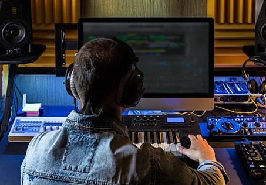
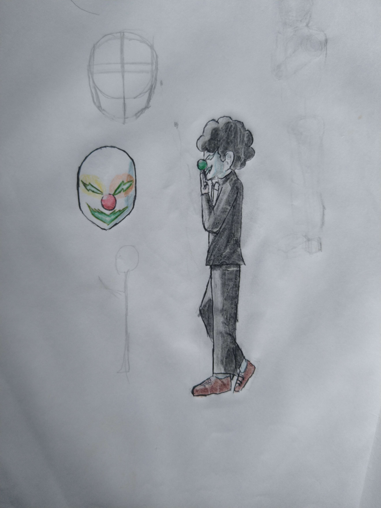

Se você me ver pela primeira vez, provavelmente vai pensar que sou aquela pessoa quietinha do canto que não fala com ninguém. E bom... não estará completamente errado. Mas espera um pouco — porque quando a gente começa a se conhecer de verdade, a história muda bastante.
Tenho 18 anos, moro em Cascavel no Paraná, e sou o tipo de pessoa que pode passar horas codando um projeto, depois pegar as baquetas e compor uma música do zero, e ainda terminar o dia assistindo anime até tarde. Sim, tudo no mesmo dia.
"Sou reservado por fora e completamente agitado por dentro —
e esse blog é a prova disso."

Programar pra mim é como resolver um puzzle gigante — cada linha de código é uma peça que se encaixa em algum lugar. Comecei a aprender porque queria criar coisas do zero, e desde então não parei mais. Aqui no blog vou compartilhar projetos, erros épicos e tudo que aprendo no caminho. [adicione detalhes seus aqui]

A bateria é o hobby que faz mais barulho — literalmente. Tem algo muito libertador em sentar na cadeira, pegar as baquetas e simplesmente tocar. É onde eu coloco toda a energia que fica represada no dia a dia. [adicione detalhes seus aqui]

Compor é diferente de tocar — é criar algo do nada. Uma melodia que surge na cabeça às 2 da manhã, uma letra que escrevo sem pensar muito, um arranjo que demora dias pra ficar do jeito certo. A música pra mim é um idioma próprio. [adicione detalhes seus aqui]

Desenhar é onde as altas habilidades aparecem com mais força. Desde cedo o lápis foi uma extensão da minha mão — uma forma de expressar o que às vezes as palavras não conseguem. [adicione informações sobre seu estilo, ferramentas que usa, etc.]

Jogos eletrônicos pra mim não são só entretenimento — são mundos inteiros esperando pra ser explorados. Me perco facilmente em histórias bem construídas, mecânicas criativas e universos que parecem vivos. [adicione seus jogos ou gêneros favoritos aqui]

Animes me apresentaram histórias que nenhum outro formato contou da mesma forma. Personagens complexos, animações incríveis e narrativas que ficam na cabeça por anos. Se você também é do time que chora em anime, você está no lugar certo. [adicione seus animes favoritos aqui]

A academia é o hobby mais silencioso da lista, mas um dos mais importantes. É o momento do dia em que eu desconecto de tudo — sem tela, sem código, sem música — só eu e o treino. Corpo saudável, mente saudável. [adicione seus objetivos aqui]
Este blog é um espaço pra eu ser eu mesmo — sem filtro, sem personagem. Vou falar de programação, de música, de desenhos que eu fiz, de animes que me marcaram, de coisas sobre a vida com autismo e de muito mais.
Se você se identifica com alguma coisa daqui, seja bem-vindo. Se não se identifica com nada, também. Talvez você saia daqui descobrindo algo novo. Ou pelo menos tendo lido algo diferente.
De qualquer forma — obrigado por estar aqui. 🙏